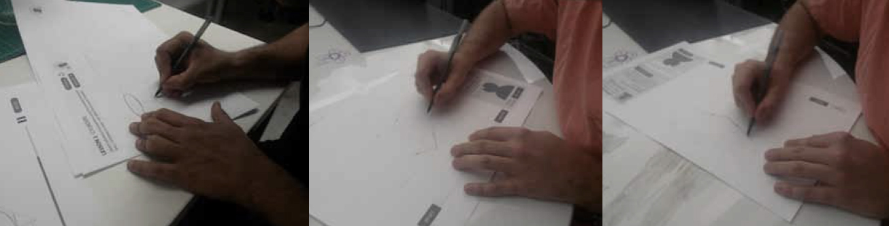
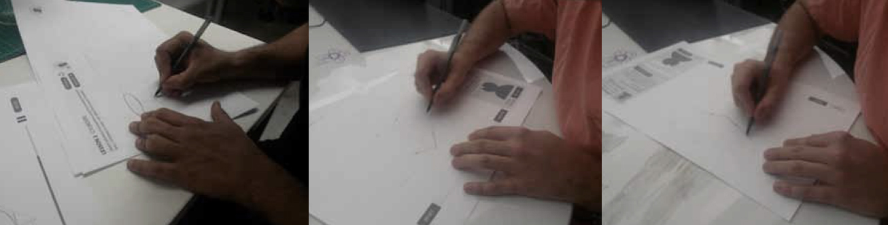

Educational App for Learning Sketching
This case study details the research and iteration that went into Sketchtivity, an NSF-funded research project that was the basis of my PhD dissertation, as well as the product I spun out of it, DrawDojo
MY ROLE
- UX Research
- UX Design
- UI Design
- Product Design
- Prototyping (Figma + HTML/CSS/JS)
- Innovation
COLLABORATORS
- Matthew Runyon
- Dr. Tracy Hammond
- Dr. Julie Linsey
- Wayne Li
ACCOMPLISHMENTS
- Proved through user studies with hundreds of students that students can make statistically significant improvements in accuracy, line quality, and speed of basic primitives
- Proved through user study with 40 participants that automated real-time feedback can help individuals improve perspective drawing accuracy.
- Developed a motivation framework for motivating students with sketch-based gameplay by interviewing 20 participants
- Won 1st place (Jury award) CHI Play 2017 Game Design Competition
- Won 2nd place Student Research Competition
- Software has been used by over 1000 students at 3 universities and 3 high schools
- Published and presented work at top HCI conferences around the world including CHI, IUI, SBIM, CHI Play, and Creativity & Cognition
- Spun out an app from the research called DrawDojo
 
